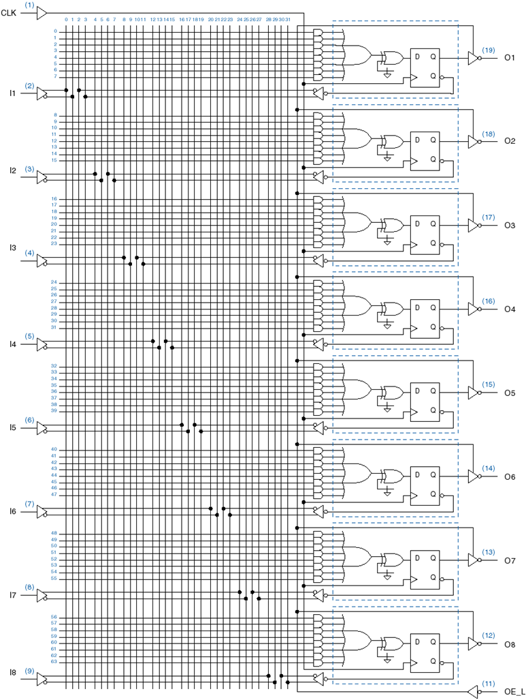
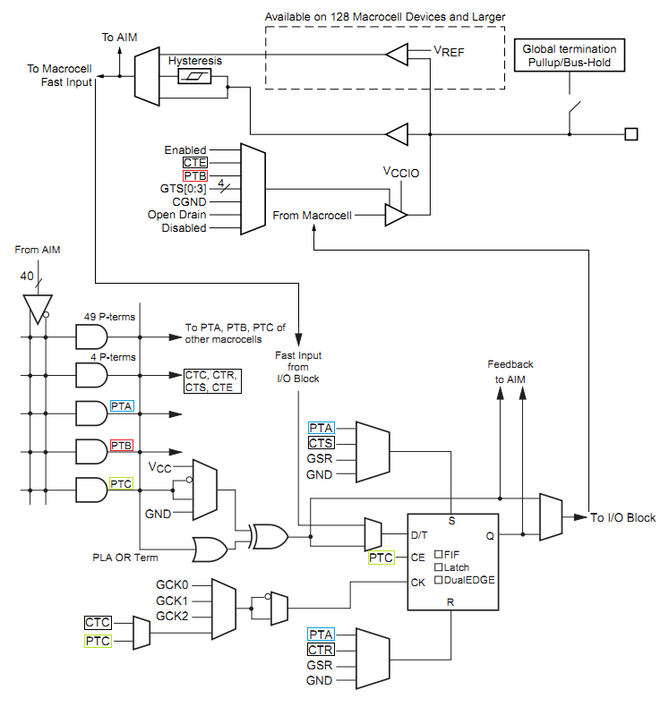
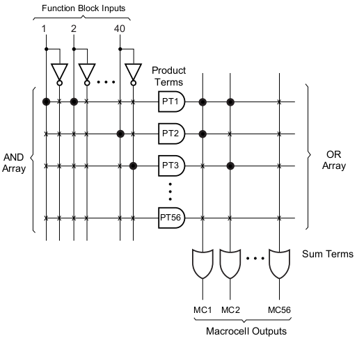
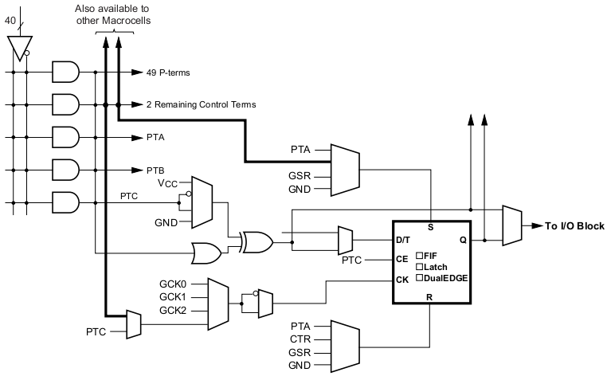
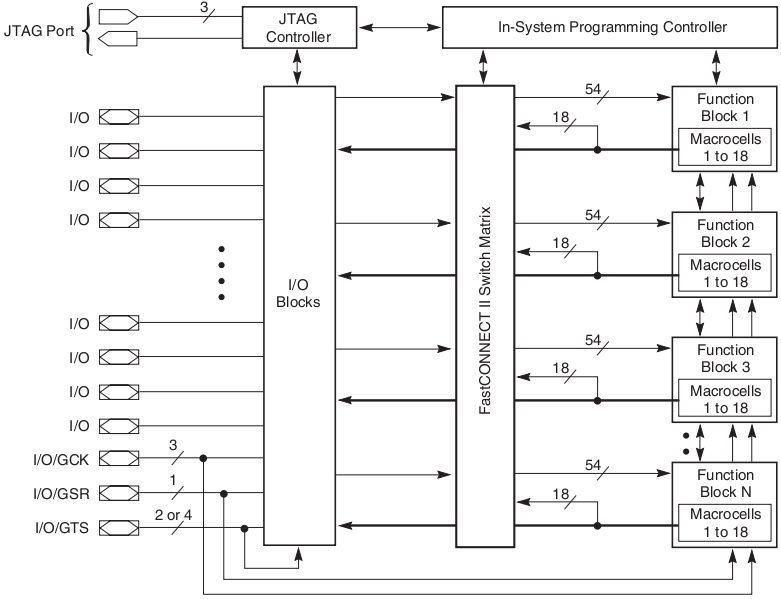
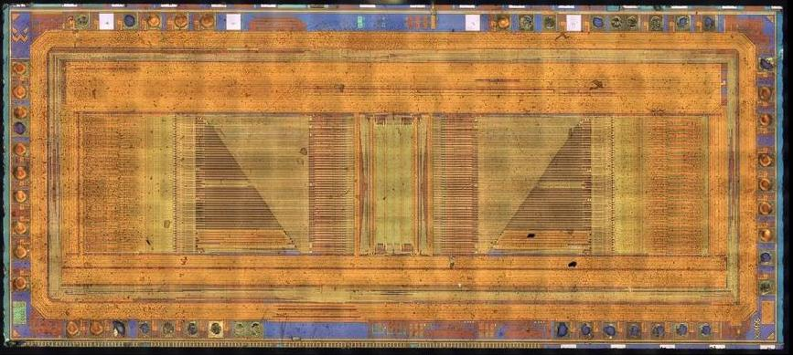
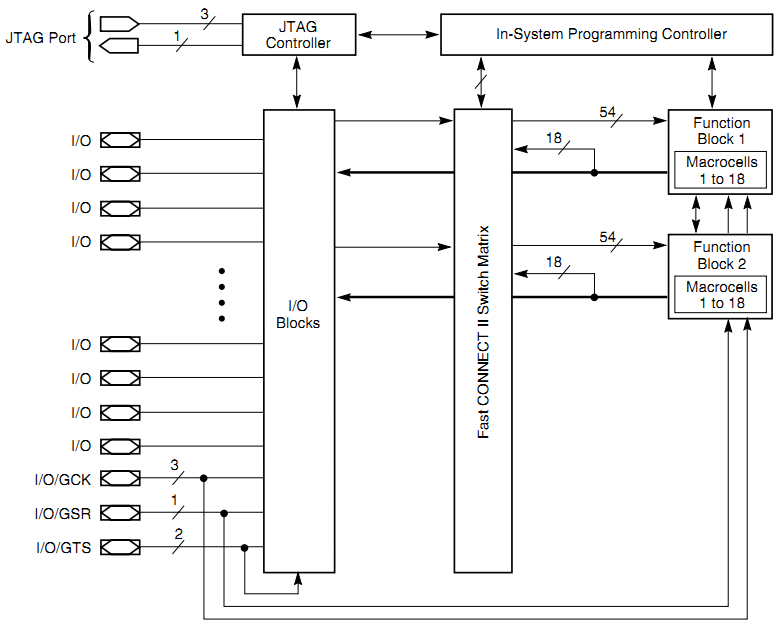
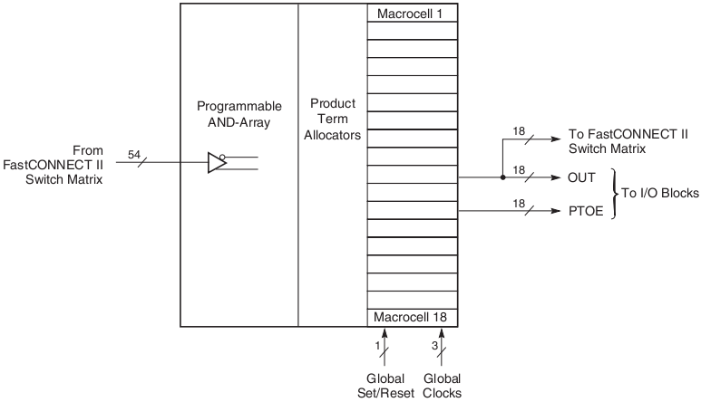
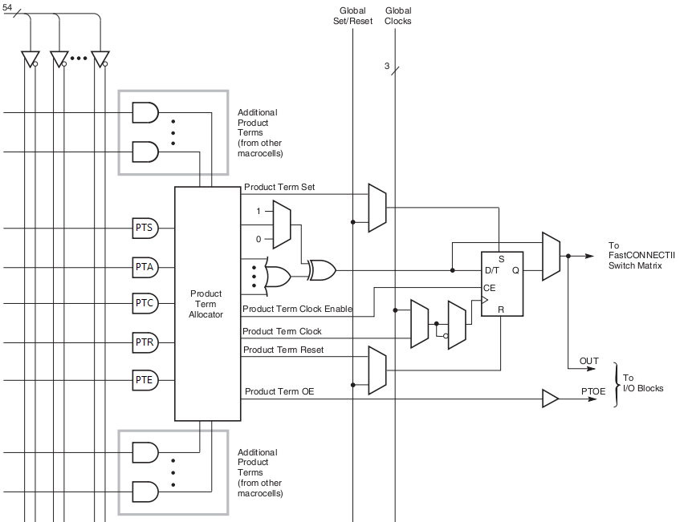
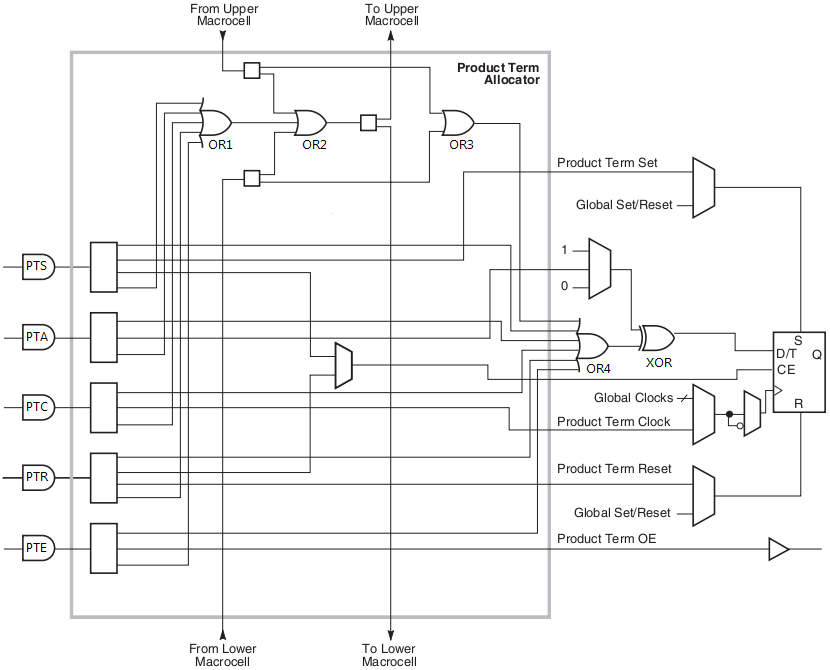

CPLD & Jtag¶
CoolRunner-II¶
以下会基于Xilinx公开的文档对CoolRunner-II的内部实现机制做一些猜测。 因为Xilinx并没有完全公开内部的实现，所以不一定是正确的。
这个是整体的系统结构图 [1] :

可以看到有这么几大块：
- BSC and ISP ——调试和在线配置模块
- I/O Blocks ——IO模块
- FBs ——Function Blocks（功能模块），其中包含两个子模块：
- MC1到MC16 是16个Macrocell（宏单元），包含触发器和一些选通逻辑、组合逻辑。
- PLA 是Programable Logic Array（就是以前常说的乘积项阵列）， 和最早出现的同名的“PLA”器件的实现几乎一样。提供AND逻辑阵列，和OR逻辑阵列。
- AIM 全称Advanced Interconnect Matrix（高级互联矩阵），用于FBs的互联， 从网上公开的资料来看，不是100%互联的开关矩阵，而是40-6的阵列 （可以确定的是XC9500XL系列的FastConnect是开关矩阵）。
PLA不同于PAL，这里附上可编程器件PAL的细节 [2] ：

再看看Lattice的GAL16V8细节：
PAL的或逻辑是固定输入的！
这个是从xilinx的2个文档里弄的截图，自己做了一些连线和线框标注， 可以说明PLA和MC的一些细节：

PLA¶
图上的PT1到PT56是真的有56路，而MC1到MC56只是举例，实际只有16个！
从AIM给到Function Block的信号有40路，每一路信号在内部使用的时候做了预处理， 分成原始信号和反向信号，这样就不用Macrocell来做反向逻辑了。

上图红框圈出的是PLA（为了不引起歧义， 只保留“线与”，“线或”擦除了），其它部分是Macrocell。 PLA通过“线与”阵列生成的乘积项有部分是固定连线（不一定要做原始的用途）。 并且所有的“线与”信号会给到“线或”阵列，Macrocell可以选择使用哪些信号。
每个FB的PLA可以给出的“线与”信号共有56路：
- 4路：CTC（Clock）、CTR（Reset）、CTS（Set）、CTE（IO Enable）是一个FB里Macrocell公用的。
- 3*16路：每个MC都有3根固定的连线PTA（Set/Reset）、PTB（IO Enable）、PTC（Clock）。
- 4路：未知，因为给到Function Block的还有一根全局置位复位、3根全局时钟， 所以猜测这4路是这四根线。
需要说明的是每个MC还有一个“线或”输入，和上述的56路信号没有固定关系。 每个MC都可以使用56路的任何组合！ 这么设计的好处是资源可以复用，坏处就是某些情况下资源利用率会降低： 如果“线或”逻辑太复杂，可能PTA、PTB、PTC就不够用了。
Xilinx给出PLA的例子，乘积项复用情况的：
CTC、CTS被使用了，所以那4路信号就只是2路可用， 不过如果其它的Macrocell需要使用的CTC、CTS逻辑一样， 可以直接使用这两路CTC、CTS信号。
XC9500XL¶
XC9500XL属于xilinx上一代的CPLD，在新的设计中基本不会再用， 但是提供的资料比较多，而且涉及到内部的实现，所以让我们看看Xilinx的XC9500XL。
FastConnect¶
从这个图来理解：

请注意这可是完整的开关矩阵，能100%布线通过，非常占用资源的！ 所以在CoolRunner-II里改成了部分开关矩阵，不能100%布通的。
这个是芯片的Die [7] :
在来看看文档上是怎么样的 [3] :
可以看到FastConnect将所有从IO得到信号和两个Function Block的输出都收集起来， 然后给两个Function Block！XC9536XL有最多36个可用的IO，那么FastConnect就有 36+18+18=72路输入信号。而每个Function Block有54路输入， 可以从这72路信号里任意选择54路。
这54路信号经内部反向得到108路组成108-90的“线与”阵列， 其中每个Macrocell分配5个输出，每个Function Block包含18个宏单元。
FBs¶
看看细节，最左边是AND阵列（乘积项），“Product Term Allocator”可以自由的选择使用乘积项结果。
PTA¶
给出PTA的细节：
图上的标注是我自己弄的，5路输入都可以直接选择给到OR4， 作为“线或”逻辑，或者用做独立的功能。 而XOR可以选择直接用PTA作为D触发器的输入，或者1，或者0，或者“线或”结果。
OR1、OR2、OR3可以让临近（上下）的Macrocell共享逻辑资源。 这种设计相对于CoolRunner-II的“线或”阵列设计，乘积项的复用率较低。
IOs¶
JTAG接口包含TAP状态机和ISP在线编程模块。 TAP包含3个主要的寄存器：
- IR（Instruction Register）
- DR（Data Register）
- BSC（Boundary Scan Chain）
我们再看看JTAG的设计：

从图中看到TCK和TMS是给到TAP状态机的，IR和DR是寄存器，BSC是连接到边界IO的寄存器。
IO扫描实现是这样的：

我们先分析IO输入信号。IOB.I是从IO给到内部逻辑的，当INTEST有效的时候， 最右边的多路选择器会使用内部的锁存器，而不是真实的外部信号。
当SHIFT/CAPTURE有效的时候，左边的三个3-1多路选通器会选中1x端， 这样D触发器就级联成多位锁存器，当TCK给个上升沿的时候， TDI会从最上端给进来，数据移动一位，延迟一段很短的时间后TDO会被更新。
当使用EXTEST就是外部测试的时候，IOB.O会替换“输出D触发器”的值。 而且当IOB.T有效的时候，测试信号IOB.O会真正的给到PAD。 只有当UPDATE信号有效的时候，TCK上升沿会将触发器的数据更新到右侧。
JTAG 4-wires¶
JTAG的四线：

- TCK（Test Clock）由调试器给到设备的测试时钟
- TMS（Test Mode State）由调试器给到设备的信号，用于切换TAP的状态
- TDI（Test Data Input）对于被测设备是数据输入，对于调试器是数据输出
- TDO（Test Data Output）对于被测设备是数据输出，对于调试器是数据输出
不同厂家的线序一般是不一样的，而且TAP状态机的寄存器位数也不一样， 这直接导致各个下载线不兼容，如果开发板上有ARM、FPGA、DSP， 那么就不可避免的用到3条下载线了……
这个是ulink的各种常见的接口定义

这个是xilinx的接口定义

JTAG Timing¶
XC9500XL文档里规定的JTAG时序是这样的

从XC9500XL的时序可以看到时钟最高为10Mhz，TMS的建立时间“TMSS”为10ns。 TMS的保持时间“TMSH”为10ns。TDI的建立和保持时间分别是15ns和25ns。 TDO的延迟为35ns。
JTAG TAP¶
TAP状态机只和TCK、TMS有关。一般在TCK的下降沿更新TMS、TDI的电平，在TCK的上升沿采样TDO的电平，这样保证建立保持时间是符合要求的，数据是稳定的。
TAP状态切换图

可以看到一般情况下TMS为高的时候会切换状态，TMS为低的时候是保持，而Test-Logic-Reset是在TMS为高的时候保持。这么设计的目的是，如果不知道当前的状态，那么拉高TMS，持续5个TCK时钟就一定可以跳转到Test-Logic-Reset状态（仔细看看状态跳转图）。 以下只是为了说明在各个状态下，DR收到TCK后的行为，并不是实际的代码。 IR的实现是类似的。
Select-DR-Scan¶
//verilog
always@(posedge TCK)
begin
if ((tap == SELECT_DR_SCAN) && !TMS)
addr_reg <= ADDR_DR;
else
addr_reg <= addr_reg;
end
Capture-DR¶
//verilog
always@(posedge TCK)
begin
if (tap == CAPTURE_DR)
r_dr <= odata_dr;
else
r_dr <= r_dr;
end
可以看到当从Capture-DR跳转到Shift-DR后，TDO已经是有效的了，但是TDI并没有移入。 只有在Shift-DR的状态给出TCK上升沿才能移入TDI数据。
Shift-DR¶
//verilog
always@(posedge TCK)
begin
if (tap == SHIFT_DR)
r_dr <= {r_dr, TDI};
else
r_dr <= r_dr;
end
需要注意的是最后从Shift-DR跳转到Exit1-DR的时候DR寄存器还是会移入一位TDI， 所以在处理的时候需要特别的注意。一般如果DR有N位，那么前N-1位保持TMS为0， 在最后一次需要把TMS置1。我最开始的时候就是没有注意这部分，导致移位总错。
Pause-DR¶
这个用途看起来没有用，其实还是可以好好用的，比如用SPI实现JTAG的时序， 如果那个SPI只能配置成8或16位，那么移位数据的时候一定是8的倍数的TCK上升沿， 在Pause-DR状态停留几次就可以保证不会有错误的状态跳转了。
Update-DR¶
//verilog
always@(posedge TCK)
begin
if ((tap == UPDATE_DR)
io <= dr;
else
io <= io;
end
Footnotes
| [1] | ds090: CoolRunner-II CPLD Family, page 4 |
| [2] | Architecture of FPGAs and CPLDs: A Tutorial, page 5 |
| [3] | ds058: XC9536XL High Performance CPLD, page 2 |
| [4] | xapp376 Understanding the CoolRunner-II Logic Engine |
| [5] | xapp444 CPLD Fitting, Tips and Tricks |
| [6] | http://siliconpr0n.org/archive/doku.php?id=azonenberg:xilinx:xc2c32a |
| [7] | http://siliconpr0n.org/archive/doku.php?id=mcmaster:xilinx:xc9536xl |


This work is licensed under a Creative Commons Attribution-NonCommercial-NoDerivatives 4.0 International License. And license of code is under GNU General Public License Version 3.
本著作係採用創用 CC 姓名標示-非商業性-禁止改作 4.0 國際 授權條款授權. 涉及到的代码使用 GNU通用许可证 第三版 授权.